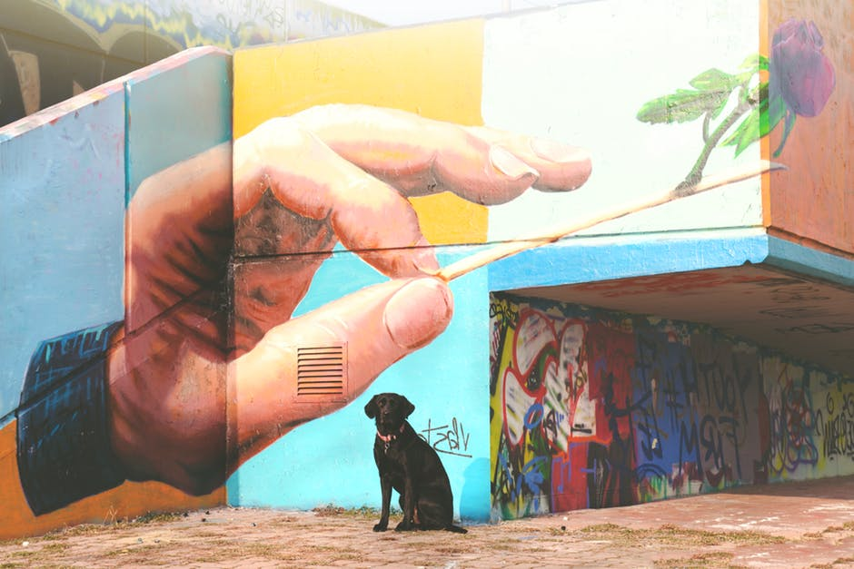

Painting
"If you hear a voice within you say you cannot paint, then by all means paint and that voice will be silenced." Vincent van Gogh
"If you hear a voice within you say you cannot paint, then by all means paint and that voice will be silenced." Vincent van Gogh
When the Spanish artist Pablo Picasso said "Painting is just another way of keeping a diary.", was he suggesting that painting was his pictorial language that he used to communicate his inner thoughts, feelings and dreams; the way I writer would with words?
We are given a hint at how we can begin to look at this connection between speech and painting from the American artist Edward Hopper who said "If you could say it in words, there would be no reason to paint." Are we to think of painters as mutes dis-abled with words but fully articulate with imagery? Here, two worlds collide; the power to depict and the power to describe. Someone is telling us a story, and we begin to create a picture in our minds to match the story. We can paint with words and many artists have included writing in their paintings. We can also observe the beautiful work of Calligraphers who are painting and writing at once.

Orpheus slain by Bacchantes, by artist Walter MacEwen.
The Dream Of Life, by artist Orcagna.
Aspects of Negro Life, by Aaron Douglas.
Every artist has to find his own voice and way in the world and Leonardo da Vinci gives us a stark reminder of what the artist must aim for when he said "The painter will produce pictures of little merit if he takes the works of others as his standard." Here, the master artist brings the idea of originality and innovation into the mix suggesting a demarcation between the artists who push the boundaries of art and those who work within them.
"I intend to destroy, destroy everything that exists in painting. I have utter contempt for painting." declared the surrealist Catalan artist Joan Miro, who was interested in disrupting established techniques in paiting leaving André Breton to describe him as "the most Surrealist of us all." Miro rises to the challenge presented to us by Leonardo to expand the possibilites of what painting could be.
So how do you innovate? How do you come up with something new to say or paint? Can we teach ourselves to see in new ways?
Miro attempts to answer these questions by describing part of his artistic process when he said
"How did I think up my drawings and my ideas for painting? Well I'd come home to my Paris studio in Rue Blomet at night, I'd go to bed, and sometimes I hadn't any supper. I saw things, and I jotted them down in a notebook. I saw shapes on the ceiling..." We get an image of Miro in a state of constant discovery and open to what his surrounding could reveal to him much the same as writer scribbling down descriptions and fragments of overheard conversations to be used later as dialogue for his characters.
When the French mathematician, physicist, inventor, writer and Catholic theologian Blaise Pascal said,"Eloquence is painted thought, and thus those who, after having painted it, add somewhat more, make a picture, not a portrait." we see another connection being drawn between speech and painting, conformity and innovation. Pascal also makes a distinction between those who merely portray or mimic what they see with those who take what they see and go beyond what is given to them.
The artist as outsider and misunderstood figure continues to be a consistent ethos to the point of being a cliche. Many artists through the ages have expressed their frustrations over how people see them and their work. Artists continue to reject being boxed in and told what the meaning of their art is. Few have stated it so forcefully as the American artist Mark Rothko who said,
"You might as well get one thing straight. I'm not an abstractionist... I'm not interested in the relationships of color or form or anything else. I'm interested only in expressing basic human emotions—tragedy, ecstasy, doom and so on. And the fact that a lot of people break down and cry when confronted with my pictures show that I communicate those basic human emotions... The people who weep before my pictures are having the same religious experience I had when I painted them. And if you, as you say, are moved only by their color relationships then you miss the point."
Rothko tells us that the picture he paints is only a vehicle to bring out the emotional world underneath the skin. He claims the emotions experienced by the viewers of his paintings as his own articulating a bond between artists and the piblic. He suggests that painting is but a bridge we cross to get to a deeper part of ourselves.
Salvator Mundi, by Leonardo da Vinci, c.1500, Oil on walnut, 25.8 × 19.2 inches, which a few days ago sold for $450.3 million, setting a new record for most expensive painting ever sold.
The Smile of the Flamboyant Wings, Joan Miro, 1953, Oil on Canvas, 23.6 x 31.5 inches.